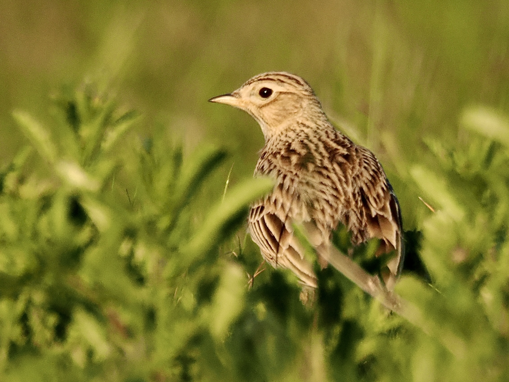
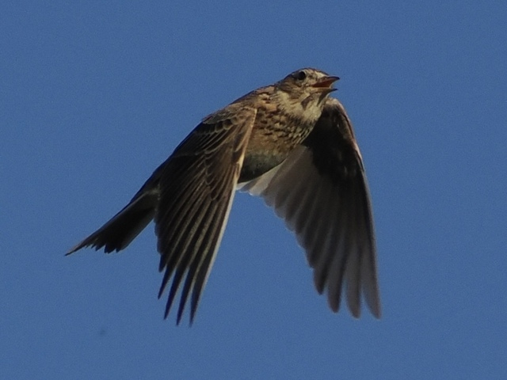

Eurasian Skylark
Alauda arvensis

An LBJ with a white "σ" around the eye. Very discreet on the ground, though it feeds and nests there. Keep dogs on leads and stay on footpaths during breeding season to avoid disturbing the birds!

Some birds could be seen with a small crest.

In display flight, gives an incessant jumble of notes. The bird could be found circling the sky then descending to the ground while gliding. The song stops when the bird lands.